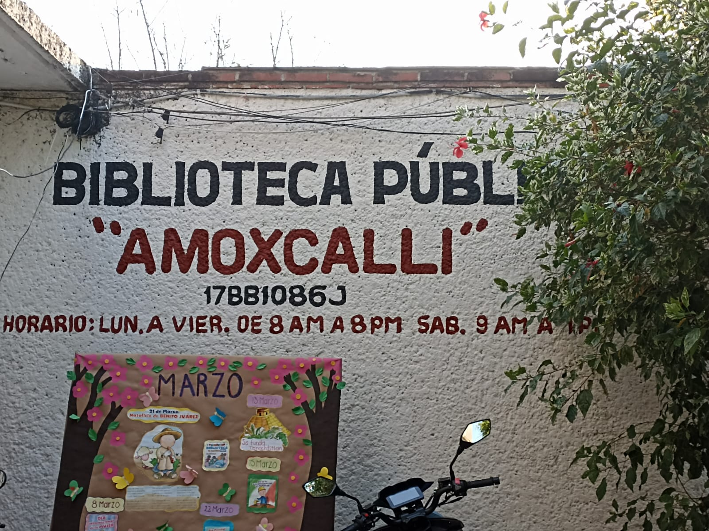

Bienvenido a la Biblioteca Amoxcalli
Somos una biblioteca pública al servicio de la comunidad de Temixco, Morelos. Fomentamos la lectura, el aprendizaje y la convivencia sana entre familias.
"Un gobierno cercano a la gente"

¿Qué deseas hacer?


"Somos una red de apoyo para esta comunidad donde la convivencia sana y la integración familiar es lo principal."
Horario de atención
| Lunes a viernes | 8:00 a.m. – 7:00 p.m. |
| Sábado | 9:00 a.m. – 1:00 p.m. |
| Domingo | Cerrado |
Algunos servicios
- Consulta de libros gratuita
- Préstamo de libros
- Circulo de lectura
- Cafecito Literario
- Talleres didácticos
Reserva una visita guiada
Si deseas programar una visita guiada, puedes registrarte aqui para solicitar tu visita